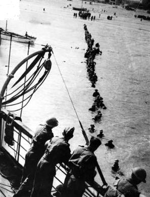

วันที่ 1 พฤษภาคม คริสตศักราช 1940
ฝ่ายสัมพันธมิตรเริ่มต้นการถอนกำลังออกจากนอร์เวย์ตามเมืองท่าต่าง ๆ ซึ่งดำเนินต่อไปจนกระทั่งถึงเดือนมิถุนายน
ฝ่ายสัมพันธมิตรเริ่มต้นการถอนกำลังออกจากนอร์เวย์ตามเมืองท่าต่าง ๆ ซึ่งดำเนินต่อไปจนกระทั่งถึงเดือนมิถุนายน
รัฐบาลพลัดถิ่นของนอร์เวย์ถูกจัดตั้งขึ้นในกรุงลอนดอน
นายกรัฐมนตรี เนวิลล์ เชมเบอร์แลนด์ สามารถรอดตัวได้อย่างหวุดหวิดจากการโต้วาทีกรณีนอร์เวย์ ในสภาผู้แทนราษฎรอังกฤษ
การเกณฑ์ทหารในอังกฤษขยายอายุไปจนถึง 36 ปี
เยอรมนีรุกรานเบลเยี่ยม ฝรั่งเศส ลักเซมเบิร์กและเนเธอร์แลนด์;ทหารเยอรมันจำนวนมากถูกระดมมาทางแนวรบด้านตะวันตก; เบลเยี่ยมประกาศสถานการณ์ฉุกเฉิน
วินสตัน เชอร์ชิลล์ได้รับเลือกให้เป็นนายกรัฐมนตรีอังกฤษ และประกาศจัดตั้งรัฐบาลผสมในยามสงคราม
ลักเซมเบิร์กถูกยึดครอง
รัฐบาลพลัดถิ่นของเนเธอร์แลนด์ถูกตั้งขึ้นในกรุงลอนดอน
เนเธอร์แลนด์ยอมจำนน ยกเว้นซีแลนด์
รัฐบาลผสมในยามสงครามของอังกฤษถูกจัดตั้งขึ้นอย่างเป็นทางการ
กองทัพเนเธอร์แลนด์ลงนามในสนธิสัญญายอมจำนน
อังกฤษตัดสินใจหยุดปฏิบัติการในนอร์เวย์
กองกำลังฝ่ายสัมพันธมิตร ประกอบด้วย ทหารอังกฤษและฝรั่งเศสล่าถอยไปยังดันเคิร์ก ฮิตเลอร์สั่งหยุดกองทัพเยอรมันและให้กองทัพอากาศของเกอริงเข้าโจมตี กองทัพอากาศอังกฤษสามารถป้องกันเมืองไว้ได้
สหภาพโซเวียตเตรียมพร้อมยึดรัฐเขตบอลติก
ปฏิบัติการไดนาโม ทหารฝ่ายสัมพันธมิตรกว่า 340,000 นาย ในดันเคิร์ก อพยพไปยังอังกฤษ ซึ่งกินเวลาไปจนถึงวันที่ 3 มิถุนายน
เบลเยี่ยมยอมจำนน
เชอร์ชิลล์สนับสนุนให้อังกฤษทำสงครามต่อไป แม้ว่าจะมีเสียงคัดค้านจากลอร์ดเฮลิแฟกซ์และเชมเบอร์แลนด์
กองทัพญี่ปุ่นทิ้งระเบิดกรุงฉงชิ่งอย่างหนัก ทางตอนเหนือของแม่น้ำแยงซี